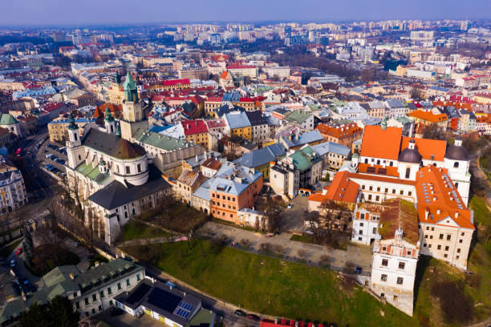

ЛЮБЛІН – ІСТОРІЇ, ЗАПИСАНІ У КАМІННІ
Люблін — місто, яке називають столицею східної Польщі — є найбільшим і найбільш швидкозростаючим містом на правому
березі Вісли.
Як столиця люблінського воєводства, служить адміністативним, еокономічним, а також культурним центром
регіону. Багата, семивікова історія Любліна, а також його розташування у багатокультурному середовищі зумовлюють його
особливі якості. Це чарівне місце привертає до себе увагу унікальним кліматом, пишною архітектурою, незліченними
пам'ятниками.
Люблін – місто натхнення
Протягом століть Люблін був ключовим містом для відносин між Польщею та Литвою, об’єднаних 1569 року у Річ Посполиту Обох Націй на спільному сеймі двох держав у Любліні. Сейм проходив у мурах замку часів Казимира Великого. На жаль, замок зазнав знищень унаслідок воєн у XVII столітті, на його місці звели наступний – у стилі англійської неоготики, який протягом 128 років був в'язницею (царською, кримінальною за часів Другої Речі Посполитої, нацистської та сталінської служб безпеки). Сьогодні замок служить Люблінському музею, і є закладом культури номер один у списку пам’яток Любліна.
Біля його підніжжя, на Замковій площі, проходять головні циркові видовища фестивалю Карнавал Фокусників. Цей головний міський захід святкують на Старому місті, Краківському Передмісті та на Литовській площі. Справжнє свято циркових вуличних артистів: жонглерів, фокусників, пожирачів вогню, клоунів, канатохідців, гімнастів.
Обов’язкові об’єкти
Варто відвідати:
- Старе місто
- стара ратуша
- базиліка отців Домініканців
- Старий театр
- Люблінський катедральний собор
- Тринітарська вежа
Легенди Любліна
- Диявольський суд
- Камінь нещастя
- Герб Любліна з козликом
- Таємничий скарб
- Нещасна русалка